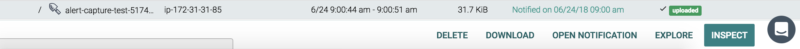
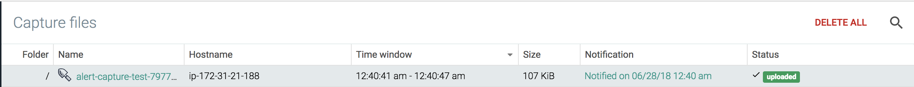

Captures
Sysdig capture files contain system calls and other OS events that can be analyzed with either the open-source sysdig or csysdig (curses-based) utilities, and are displayed in the Captures module.
The Captures module contains a table listing the capture file name, the host it was retrieved from, the time frame, and the size of the capture. When the capture file status is uploaded, the file has been successfully transmitted from the Sysdig agent to the storage bucket, and is available for download and analysis.
This section covers creating, configuring, and analyzing capture files.
Contents
Configure Sysdig Captures
Create a Capture File
To create a capture file:
From the
Exploremodule, select a host or container item.Click the
Settings(ellipsis) drop-down menu, and selectSysdig Capture. TheSysdig Capturepop-up window will open.Define the following parameters, and click the
Start Capturebutton:Parameter
Description
Capture path and name
The name of the capture file. The default name includes the date and time stamp the capture was created.
Time frame
The period of time captured. The default time is 15 seconds; the maximum capture time available is 24 hours. The capture file size limit is 100MB.
Note
Sysdig recommends using the default time to ensure captures are small and manageable.
Filter
Restricts the amount of trace information collected. For more information, including examples of available filters, refer to the Sysdig utility website.
Storage
The storage location for the capture files. The default storage location is the Sysdig Cloud Amazon S3 bucket. To configure a custom S3 storage bucket, refer to the Configure AWS Capture File Storage documentation.
The Sysdig agent will be signaled to start a capture, and send back the resulting trace file. The file will then be displayed in the Captures module.
Store a Capture File
Sysdig capture files are stored in Sysdig's AWS S3 storage (for SaaS environments), or in the Cassandra DB (for on-premises environments) by default. To configure a custom S3 storage bucket, refer to the Configure a Custom S3 Capture Bucket documentation.
Download a Capture File
To download a capture file:
From the
Capturesmodule, navigate to the target capture file.Select the target capture file.
Click theDownloadbutton. A capture file will be automatically downloaded to your local machine.
Delete Capture Files
To delete a single capture file:
From the
Capturesmodule, select the capture file to be deleted.Click the
Deletebutton at the bottom of theCapturesmodule: On the
Keep Fileprompt, click theDeletebutton to confirm, or theKeep Filebutton to cancel.
To delete all capture files:
From the
Capturesmodule, click theDelete Allbutton: Click the
Yes, Delete Capturesbutton to confirm, or the Cancel button.
Review a Capture File
Explore a Capture File
From the
Capturesmodule, navigate to the target capture file.Select the target capture file. You will see some action buttons at the bottom of the interface.
Click theExplorebutton. You will be directed to the Explore tab view of the capture.
Inspect a Capture File
From the
Capturesmodule, navigate to the target capture file.Select the target capture file. You will see some action buttons at the bottom of the interface.
Click theInspectbutton. You will be directed to the Sysdig Inspect page of the capture.